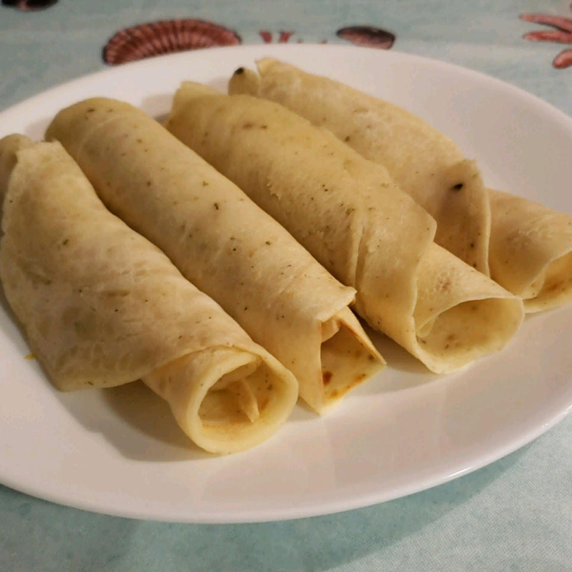

Crepes

Description
This is a recipe for crepes. Yum.
And this is just another paragraph.
Ingredients
- 1 cup all-purpose flour
- 1 cup water
- 1 egg
- 2 tablespoons butter, melted
- 1 pinch salt
- 1 tablespoon caraway seeds
Steps
- Heat a non-stick crepe pan over medium-high heat.
- Whisk flour and water together in a bowl. Add egg and mix well. Whisk butter, salt, and caraway seeds
into flour mixture to form a smooth batter.
- Pour about 1/4 cup batter into heated pan. Tilt the pan around so the batter forms a nice round shape.
Cook until bubbles form throughout the batter, 2 to 4 minutes. Flip the crepe by using spatula to loosen
it from the pan. Flick your wrist upwards to give the crepe a toss, flipping it, and landing it back in
the pan. Cook the second side until lightly browned, about 30 seconds. Repeat with remaining batter.